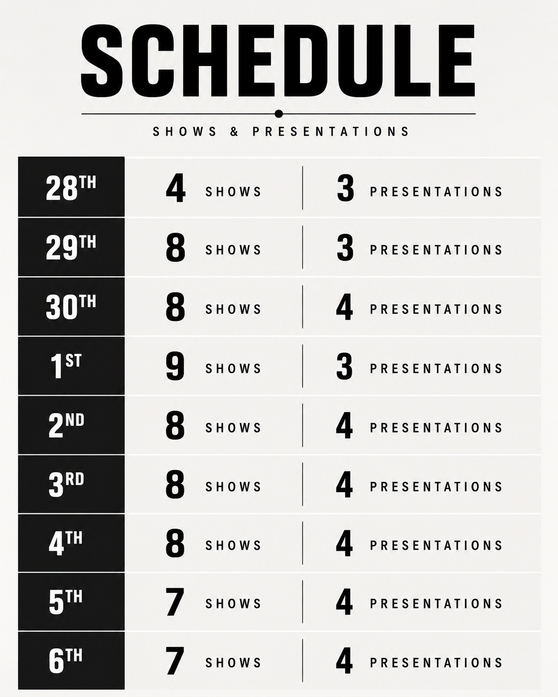
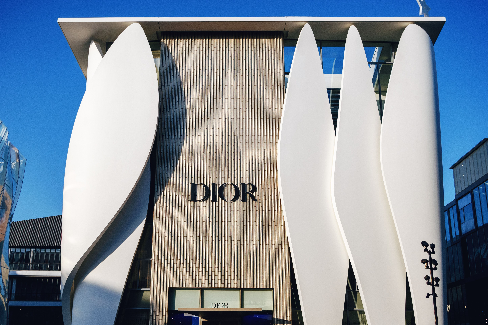

Paris Fashion Week is an identification of what is changing within fashion for Spring/Summer 2027 (SS27). It is a week where designers go beyond limitations and resist the expectation of what fashion is supposed to be.
Commencing on 28 September 2026, major fashion house designers will take to the runway. Narratives and constructions, wrapped in fabric, will be presented ready to reach not only a Parisian audience, but millions watching through digital streams.
Designers present their new collections through either a fashion show or presentation. On the newly released Paris Fashion Week SS27 schedule, we will witness a vast majority of shows, consisting of the traditional choreographed sequence of models showcasing garments.
However, stepping away from traditional formats, we will also be exposed to presentations, where audiences can experience props, objects and freer model walkways designed to bring narratives to life and make them more interactive.
PARIS FASHION WEEK SS27
SCHEDULE

With the schedule setting the pace for the week, attention turns towards the designers who could define the direction of Paris Fashion Week SS27.
DESIGNERS TO WATCH AT PARIS FASHION WEEK 2026
-JONATHAN ANDERSON AT DIOR

Paris Fashion Week is a known location for the extreme and experimental, making it an appropriate stage for the persona of Jonathan Anderson ,now under the name and personality of the French luxury house Dior.
Questions surrounding his new presentation of the historically loved brand continue to develop. Anderson's second ready-to-wear women's collection for Dior raises questions about the direction of the house and its traditional portrayal.
Will these two personas collide in a tragedy, or create a new and improved evolution?
Focusing on the “inevitability” of “change”, Anderson’s direction appears to frame fashion as a goodbye to certain traditions, reconstructing them into memories to revisit.
This constructs the idea that modernisation in fashion should not only happen on the runway, but within a brand completely. Taking on a role such as this carries the responsibility of steering away from the safety of familiarity.
The real questions surrounding this Dior SS27 collection rely on one thing: can Jonathan Anderson play the role he has stepped into, and can Dior accept modernisation while keeping up with evolution?
- MATTHIEU BLAZY AT CHANEL

Not only is Matthieu Blazy one to watch at Paris Fashion Week 2026, but he is also a designer who could help determine whether memories are simply to be revisited, or whether historical importance should be carried forward through evolution.
Witnessing these two approaches within the fashion industry allows us to see how fashion houses translate these ideals. What is considered rebellion, and what is instead presented as an organic shift towards advancement?
Blazy offers a more visible path for his new ideology. From his previous ready-to-wear women’s and menswear collections, Blazy has showcased house archives and used historic memories to foreshadow a new period for Chanel.
By weaving together Chanel codes with exaggerated and experimental silhouettes, he creates a conversation between the house's history and its future.
This begs the question of whether Blazy is moving away from a recognisable face of Chanel, or whether he is simply wearing a mask that carries a new approach.
- ALESSANDRO MICHELE AT VALENTINO
Alessandro Michele begs the question, do fashion houses change creative directors, or do creative directors like Michele change their identity to fit a fashion house?
In his Spring/Summer 2026 collection for Valentino, Alessandro Michele referenced 1970s Valentino, combining tailored velvet structures with everyday, wearable elements.
This aligns with the way collaborations between creative directors and major fashion houses have worked before , combining two identities and creating something new.
It shows how the future can be adapted by using the past.
Nothing is simply created. It is created through history, and history is something to always be remembered.
However, with Michele carrying such a recognisable identity from his own creative history, another question emerges: will his past overtake Valentino's, or will we see another compromise between the two?
WHAT TO EXPECT FROM
PARIS FASHION WEEK
SS27
If the previous collections of Dior, Chanel and Valentino are anything to predict from, heritage isn’t being left behind. It is being reopened, dissected and reconstructed.
Designers are returning to the archives not simply to reproduce what has already existed, but to question how those identities can survive within a modern fashion industry.
Paris may therefore become less about forgetting the past and more about deciding which parts of it deserve to move forward.
Expectations for extreme silhouettes may also be pushed further. With exaggeration and experimentation becoming increasingly accepted on the Paris stage, expression through garments and a lack of practicality may once again take centre stage.
This challenges not only what a garment is supposed to look like, but the traditions of the fashion industry itself.
However, with this expectation becoming a repeating story, how long can we push this new ideal before it becomes its own tradition?
Paris Fashion Week 2026 is therefore not simply an identification of what to see for SS27, but an indication of where fashion and its industry may be heading.
As historic fashion houses continue to hand their identities to new creative voices, the question becomes whether tradition will push back to remain present in history, or whether these directors will be allowed to distort, reconstruct and ultimately redefine the personas of major fashion houses.
Perhaps the future of fashion isn’t about abandoning its history, but deciding what deserves to survive it.